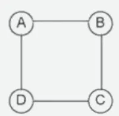

Uma lagoa esta sendo tomada por uma planta aquática a cada dia que passa ela dobra a população, sabendo que em 30 dias
a planata cobriu totalmente esta lagoa, em quantos dias ela cobriu a metade da lagoa?
Ana, Beatriz e Cárita têm diferentes idades. Sabemos que:
A soma das idades de Ana e Beatriz é 36 anos.
A soma das idades de Beatriz e Cárita é 44 anos.
A soma das idades de Ana e Cárita é 38 anos.
Qual é a idade de Cárita?
Em uma corrida com cinco participantes (Heitor, Cárita, Marta, Jorge e Raul), temos as seguintes informações:
1. Cárita chegou logo antes de Jorge.
2. Marta não foi a última.
3. Heitor chegou entre Cárita e Raul.
Pergunta: Quem foi o último colocado?
(Enem) Para estimular o raciocínio de sua filha, um pai fez o seguinte desenho e o entregou à criança juntamente com três lápis de cores diferentes. Ele deseja que a menina pinte somente os círculos, de modo que aqueles que estejam ligados por um segmento tenham cores diferentes.
Desenho feito por pai (quatro círculos com as letras A, B, C e D formando um quadrado) em enunciado de questão do Enem.

De quantas maneiras diferentes a criança pode fazer o que o pai pediu?